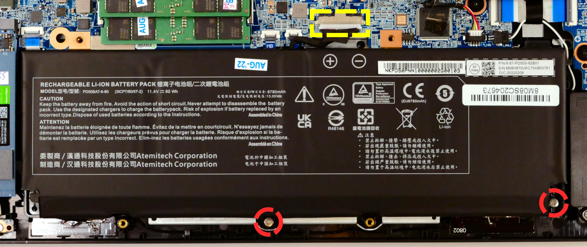
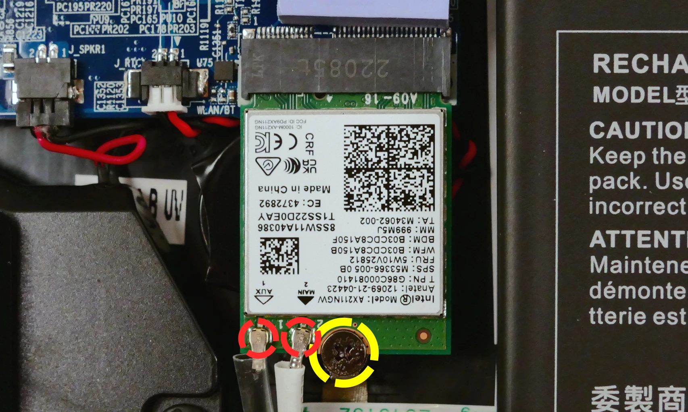
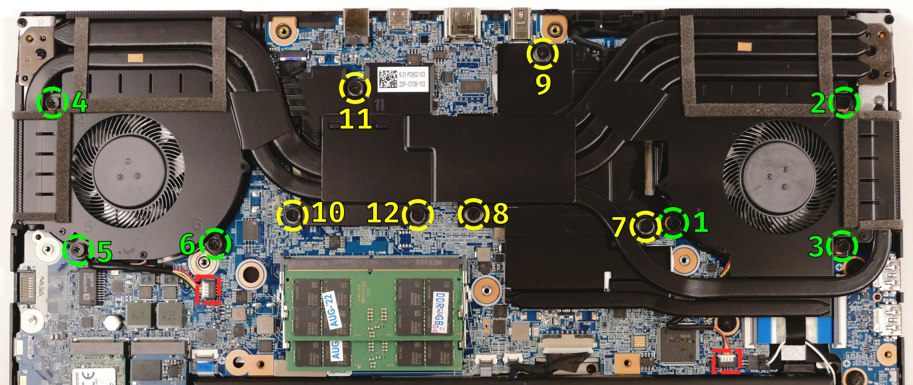
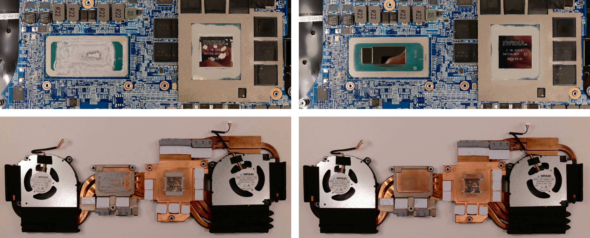
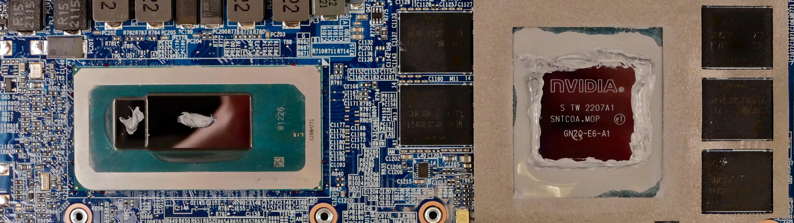
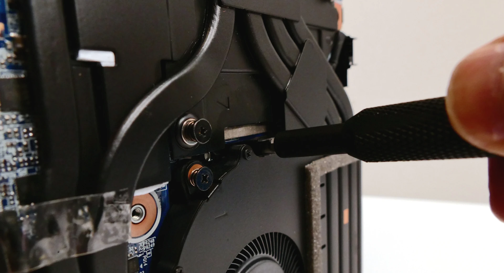

Oryx Pro (Parts & Repairs)
Many components in your Oryx Pro can be upgraded or replaced as necessary. This page uses photos of the 15" model, but screw counts, general component locations, and other details are the same on the 17" model unless otherwise noted.
- Removing the bottom cover
- Replacing the RAM
- Replacing an M.2/NVMe SSD
- Replacing the WiFi/Bluetooth module
- Replacing the battery
- Replacing the CMOS battery
- Replacing the fans/heatsink/thermal paste
- Replacing the speakers
- Replacing the keyboard
Removing the bottom cover:
Removing the cover is required to access the internal components. Prior to removing the cover, ensure the AC power is unplugged and all peripherals (including SD cards and USB drives) are unplugged or removed from the system.
Tools required: Cross-head (Phillips) screwdriver
Time estimate: 5 minutes
Difficulty: Easy ●
Steps to remove the bottom cover:
- Place the machine lid-side down.
- Use a soft surface (such as a towel) to avoid scratches.
- Remove the 16 bottom panel screws.
- All screws are the same length on any given unit. However, the 17" model uses longer screws than the 15" model.

- Pull the bottom panel off, starting from the hinges in the back.
Replacing the RAM:
The Oryx Pro 10 supports up to 64GB (2x32GB) of DDR5 SO-DIMMs running at 4800MHz. If you've purchased new RAM, need to replace your RAM, or are reseating your RAM, follow these steps.
Tools required: Cross-head (Phillips) screwdriver
Time estimate: 10 minutes
Difficulty: Easy ●
Steps to replace the RAM:
- Follow the steps above to remove the bottom cover.
- Press the small tabs on both sides of the RAM simultaneously. The RAM should spring up to an angle.

- Remove the RAM from the slot.
- Insert the new RAM (or reseat the existing RAM) by placing it in the keyed slot and pressing down on the RAM until it clicks into place.
Replacing an M.2/NVMe SSD:
This model supports up to two M.2 SSDs. Both M.2 slots are size 2280. Both slots support PCIe NVMe Generation 4 only. The slots are backwards-compatible with PCIe NVMe Generation 3 drives, but the slots do not support SATA.
Tools required: Cross-head (Phillips) screwdriver
Time estimate: 10 minutes
Difficulty: Easy ●
Steps to replace the M.2 drive:
- Follow the steps above to remove the bottom cover.
- Unscrew the retainer screw opposite the M.2 slot.

- Remove the existing M.2 drive by pulling it out of the slot.
- Insert the new M.2 drive into the slot and hold it in place.
- Replace the retainer screw.
Replacing the battery:
The battery provides primary power whenever the system is unplugged.
The model and part numbers for the Oryx Pro 10's battery are dependent on the screen size:
- For the 15" model, the battery model is
PD50BAT-6-80and the original part number is6-87-PD50S-82B01. - For the 17" model, the battery model is
PC70BAT-6-80and the original part number is6-87-PD70S-82B01.
Third-party battery sellers may list one or both of these numbers, and may offer other compatible part numbers with the same model number. You can also contact System76 to purchase a replacement battery.
Tools required: Cross-head (Phillips) screwdriver
Time estimate: 10 minutes
Difficulty: Easy ●
Steps to replace the battery:
- Follow the steps above to remove the bottom cover.
- Remove the two silver battery screws along the bottom of the battery.

- Unplug the white connector (highlighted yellow above) connecting the battery to the motherboard.
- Remove the battery, starting from the bottom edge with screw holes.
- When putting in the new battery, start with the plastic tabs along the top edge (opposite from the screw holes.)
- When plugging in the new battery, the red wire on the connector goes on the left, and the black wire goes on the right.
Replacing the wireless card:
Your Oryx Pro's WiFi and Bluetooth are both handled by the same module. It is a standard M.2 2230 slot with PCIe and USB interfaces (E-key).
Tools required: Cross-head (Phillips) screwdriver
Time estimate: 10 minutes
Difficulty: Medium ●
Steps to replace the WiFi/Bluetooth module:
- Follow the steps above to remove the bottom cover and remove both SSDs.
- Removing the outermost SSD is optional, but will make it easier to work with the wireless card.
- Locate the wireless card. Remove any clear tape that is securing the wires.

- Gently remove the two antennas (highlighted red above) by pulling them up and away from the wireless card.
- Remove the retaining screw opposite the M.2 slot, highlighted yellow above.
- Keeping the wireless card parallel with the motherboard, slide the card out of the M.2 slot.
- Insert the new wireless card into the M.2 slot.
- Replace the retaining screw.
- Attach the two antennas by aligning the circular fittings and pressing onto the wireless card. The connectors will snap into place. Use caution when attaching the connectors; the pins can bend, break, or snap.
Replacing the CMOS battery:
The CMOS battery supplies power to the system's CMOS chip. UEFI settings and the computer's hardware clock are stored on the CMOS. If your system doesn't boot, you can reset the CMOS to force a low-level hardware reset. If your clock is constantly resetting, it's likely your CMOS battery needs to be replaced.
Warning (ingestion hazard): Keep batteries out of reach of children. Death or serious injury can occur if ingested. If a battery is suspected to be swallowed or inserted inside any part of the body, seek immediate medical attention. In the US, you can also call the National Battery Ingestion Hotline for guidance: 1 (800) 498-8666
Tools required: Cross-head (Phillips) screwdriver
Time estimate: 15 minutes
Difficulty: Medium ●
Steps to replace the CMOS battery:
- Follow the steps above to remove the bottom cover, remove both SSDs, and remove the wireless card.
- If you are not replacing the CMOS battery, then removing the wireless card is optional.\

- Unplug the small white connector that connects the CMOS battery to the motherboard. If you are replacing the battery, gently pull from the sides to pry it up from where it's stuck to the case.
- To clear the CMOS, disconnect the main battery (if it's still installed), open the lid of the machine, and hold down the power button for at least 15 seconds to discharge any residual energy in the system.
- Reconnect the CMOS battery, reconnect the main battery, and replace the M.2 SSD.
- Replace the bottom panel and power up the Oryx Pro. The system may power itself off and on after initial boot; this is normal behavior when the CMOS has been reset.
Replacing the cooling system:
If the CPU/GPU fans become noisy and cleaning them out doesn't fix the issue, you may need a new fan.
The Oryx Pro 10 comes with heat-conductive metal on the dedicated GPU, and uses regular thermal paste for the CPU. These materials help facilitate effective heat transfer between the CPU/GPU and the cooling equipment.
- Thermal paste should generally be replaced after removing the heatsink; thermal paste also dries over time, so depending on your climate and the age of the machine, applying new thermal paste may increase thermal performance.
- The heat-conductive metal does not dry out, and replacing it is optional; replacement may be useful if the previous metal has flowed out of the proper area for cooling.
Replacement heat-conductive metal fitted to the machine and replacement fans can be obtained by contacting support.
Tools required: Cross-head (Phillips) screwdriver
Time estimate: 40 minutes
Difficulty: High ●
Steps to replace the fans/heatsink/thermal paste:
- Power off the machine. Wait 20 minutes for the machine to cool down to room temperature.
- Warning: Removing the heatsink before the machine has cooled to room temperature may result in heat-conductive metal flowing onto the motherboard and causing irrepairable damage.
- Follow the steps above to remove the bottom cover.
- Unscrew the fan and heatsink screws in the order of the stamped numbers, starting with #1, then #2, and continuing until you have removed #12.
- The screws are held captive and will not come out of the fans/heatsink. The fan screws will click when they are fully loosened.
- The order for the 17" model is shown below; the screws are numbered differently on the 15" model. Follow the order stamped into the heatsink metal.
- Do not remove the smaller screws holding the fan covers onto the fans.

- If there is any clear tape securing the heatsink/fans or the fan wires, remove it.
- Unplug the two white fan connectors from the motherboard (highlighted red above).
- Remove the heatsink/fans from the case, being careful not to bend the heatsink pipes. It may take some pressure to break the seal of the thermal paste.
- Using a paper towel, remove the existing thermal paste from the CPU, the CPU heatsink, the border of the GPU die, and the GPU heatsink.
- A small amount of rubbing alcohol can be used if the old paste is dried or difficult to remove.
- The heat-conductive metal may have some holes where pieces stuck to the die or heatsink.
- If you are not replacing the heat-conductive metal, do not pick or wipe the heat-conductive metal off of the GPU heatsink.

- If you are replacing the heat-conductive metal, remove the plastic cover from the GPU heatsink.
- A fingernail or a thin plastic tool can be used to pick a side of the plastic cover up from the GPU heatsink.
- Warning: The heat-conductive metal is electrically conductive. Be careful not to get specks of heat-conductive metal onto the motherboard. The heat-conductive metal can cause the motherboard to malfunction or fail if it makes contact.
- After removing the plastic covers, wipe away any remaining heat-conductive metal residue from the heatsink and GPU.
- Some adhesive residue may remain on the GPU heatsink.

- Apply the new heat-conductive metal to the GPU heatsink, matching the orientation of the plastic covering with the diagonal corner of its respective surface.
- Warning: Replacement heat-conductive metal obtained from System76 will include the plastic covering. If you are applying third-party heat-conductive or liquid metal, clean and reuse the plastic covering from the stock heat-conductive metal to prevent the aftermarket metal from flowing onto the motherboard when heated.

- Apply a small line of thermal paste directly onto each CPU die.
- Apply a line of thermal paste around the border of the GPU die.
- The purpose of this border is to further prevent melted heat-conductive metal from flowing onto the motherboard during operation.
- Keep the nozzle of the thermal paste tube pressed against the surface of the chip; dispense the thermal paste slowly while moving the nozzle.
- Be careful not to apply too much thermal paste around the GPU. Only a thin layer is needed.

- Carefully replace the heatsink.
- Tighten the fan and heatsink screws, starting with #1, then #2, and so on until #12.
- Plug the two white fan connectors back into the motherboard.
Replacing the speakers:
The system has two bottom-firing speakers, which can be removed and replaced individually.
Tools required: Cross-head (Phillips) screwdriver
Time estimate: 10 minutes
Difficulty: Easy ●
Steps to replace the speakers:
- Follow the steps above to remove the bottom cover. For the right speaker, also remove the outermost SSD.
- Disconnect the speaker wire from the motherboard.
- This can alternatively be done after freeing the speaker.

- Unscrew the speaker screws and lift the speaker out of the machine.
- The right speaker has three screws; the left speaker has two screws.
- The speaker wire may be partially routed behind other components or tape; be careful when removing it.
- Place the new speaker in the machine, plug in the connector, replace the screws, and reinstall the outermost SSD (if necessary) and bottom panel.
Replacing the keyboard:
The keyboard can be replaced if its switches or electronics have been damaged.
Warning: The Oryx Pro 10's keyboard is held in by a strip of adhesive in addition to one of the bottom panel screws and the perimeter clips. The adhesive may be difficult to remove from the keyboard and/or case, and while the keyboard should still be functional if removed carefully, it is likely that permanent aesthetic damage will occur to the bottom side of the keyboard during removal. Removal is not recommended unless the keyboard is malfunctioning.
Tools required: Cross-head (Phillips) screwdriver, tweezers, spudger tool (optional)
Time estimate: 20 minutes
Difficulty: Hard ●
Steps to replace the keyboard:
- Follow the steps above to remove the bottom cover.
- Locate the keyboard adhesive strip access point near the right fan.
- You can optionally remove the fan/heatsink assembly to make access easier, but this is not recommended unless you are also removing the thermal paste.

- Using a pair of tweezers, pull out the end of the adhesive strip.

- Open the lid slightly and place the machine on its side.
- Push a screwdriver into the adhesive slot until the keyboard pops out.
- If available, a flathead spudger tool can also be used to provide more contact with the keyboard.
- A layer of plastic may stick to the adhesive and come off of the keyboard. Try to keep as much of the plastic shielding on the keyboard as possible.

- Set the machine back down and raise the keyboard away from the chassis. The larger ribbon cable is for the keyboard, while the smaller ribbon cable is for the keyboard backlight.

- Flip the black latches upwards to free the ribbon cables.
- Pull the ribbon cables out of the connectors.
- Remove the keyboard and replace it with the new one.
- Carefully slide both ribbon cables into their connectors.
- Flip the black latches back into place to secure the ribbon cables.
- Place the keyboard back into position, starting with the tabs on the bottom edge.
- The keyboard is primarily held in place by the perimeter clips and the keyboard screw (one of the bottom panel screws). The adhesive strip can optionally be removed or omitted to make future keyboard removal easier.
- Secure the rest of the keyboard by pressing down on each of its edges.
- Turn the machine lid-side down again and press the adhesive strip back into its slot.